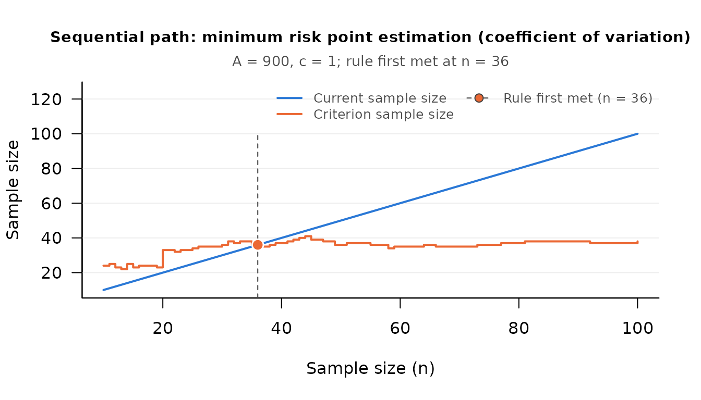

Minimum Risk Point Estimation of the Coefficient of Variation
Source:vignettes/mrpe-cv.Rmd
mrpe-cv.RmdThe Research Question
The coefficient of variation, κ = σ / μ, expresses the standard deviation of a quantity relative to its mean, so it summarizes dispersion on a unit free scale. It is used wherever relative, rather than absolute, variability is the quantity of interest: the relative variability of assay measurements in the laboratory, of claim sizes in insurance, of response times in an experiment, or of household expenditures in survey research.
How many observations should be collected to estimate κ well? When each observation carries a cost (a record to audit, a participant to run, a sample to assay), collecting more data buys a more accurate estimate and spends more of the study budget. Minimum risk point estimation (MRPE) makes that trade explicit. Chattopadhyay and Kelley (2016) develop a purely sequential procedure that estimates κ while minimizing a risk that combines estimation error and sampling cost. Because the asymptotic variance of the sample coefficient of variation depends on the unknown population (through its third and fourth moments), the sample size cannot be fixed in advance; the data collected so far say whether to stop.
The Method
Write kn for the sample coefficient of variation after n observations, the sample standard deviation divided by the sample mean. The risk combines the expected squared estimation error, priced by a constant A, with the cost c of each observation (Equation 11 of Chattopadhyay and Kelley, 2016):
Rn(κ) = A E[(kn − κ)2] + c n
For samples that are not too small the mean squared error is approximately ξ2 / n, where ξ2 is the asymptotic variance of √n (kn − κ), so the risk is approximately A ξ2 / n + c n (their Equation 14). That is smallest at the optimal fixed sample size (their Equation 15)
nc = (A / c)1/2 ξ
where it equals 2 c nc (their Equation 16). Because ξ2 is unknown, the purely sequential rule estimates it from the data after each observation; write Vn2 for the estimate from the first n. To keep a low early estimate from stopping the procedure too soon, a small correction term is added, and sampling stops at the first n at or beyond the pilot sample size with (their Equation 23)
n2 ≥ (A / c) (Vn2 + n−2γ)
where γ is a constant strictly between 0 and 1/2 (the article
suggests 0.49, the default of the argument gamma). The
pilot sample size is the larger of a minimum m0 and
(A / c)1/(2 + 2γ), rounded up (their
Equation 24, a form the article gives as following Mukhopadhyay and de
Silva, 2009).
The Sequential Workflow
seq_mr_cv_pilot() returns the pilot sample size, which
depends only on the two cost constants, and seq_mr_cv()
evaluates the stopping rule on the data collected so far and records the
decision as an attribute. Neither collects data or keeps state: the
analyst calls seq_mr_cv() again after each new observation.
There is no confidence level, because the procedure targets a risk and
not a confidence interval.
Suppose an actuary is estimating the relative variability of individual claim amounts (in thousands of dollars), which are positive and heavily right skewed. Auditing one claim costs one unit, and a unit of squared estimation error is priced at A = 900.
A <- 900 # price of one unit of squared estimation error
cost <- 1 # cost of auditing one claim record
pilot_n <- seq_mr_cv_pilot(A = A, c = cost)
pilot_n
#> [1] 10To have data to work with, 100 claims are simulated here from a right skewed gamma distribution whose coefficient of variation is 1.29; they stand for the claims in the order they would be audited. The actuary audits the pilot sample and evaluates the rule.
set.seed(113)
claims <- rgamma(100, shape = 0.6, scale = 2)
check <- seq_mr_cv(claims[1:pilot_n], A = A, c = cost)
check
#> Sequential check (minimum risk point estimation (coefficient of variation))
#>
#> Current n : 10
#> Criterion n : 24
#>
#> cv : 1.378934
#> risk : 54.47553
#> xi_squared : 0.4941725
#> optimal_n : 24
#> current_n : 10
#>
#> Stopping rule met: FALSEThe criterion sample size implied by the pilot data exceeds the pilot
sample size, so the rule is not met and auditing continues, one claim at
a time, with a new check after each. In a study that is a call to
seq_mr_cv() after each claim. With the claims already in
hand, seq_path() makes the same sequence of checks in one
call, and its plot shows the criterion moving as the claims arrive.
path <- seq_path(seq_mr_cv, claims, A = A, c = cost)
attr(path, "stop_n")
#> [1] 36
plot(path, which = "criterion")
attr(path, "final_check")
#> Sequential check (minimum risk point estimation (coefficient of variation))
#>
#> Current n : 36
#> Criterion n : 35
#>
#> cv : 1.237414
#> risk : 67.75349
#> xi_squared : 1.27014
#> optimal_n : 35
#> current_n : 36
#>
#> Stopping rule met: TRUEThe rule was first met at 36 claims, and that is where the audit
ends: the estimate a sequential design reports is the one at the
stopping point, not one from a later, more favorable sample size. The
reported cv is the minimum risk point estimate of κ, and
risk is the estimated risk there. MRPE returns a point
estimate and no confidence interval, and the estimate carries the
sampling error of a statistic computed at a modest sample size.
seq_report() words the result for a methods section:
seq_report(path)
#> Sample size was determined with the sequential minimum risk point
#> estimation procedure for the coefficient of variation (Chattopadhyay &
#> Kelley, 2016), with a loss constant of A = 900 and a sampling cost of c
#> = 1 per observation. The stopping rule was evaluated from the pilot
#> sample size (n = 10) onward, after each additional observation, and was
#> first met at n = 36. At that sample size the estimate of the
#> coefficient of variation was 1.237.
#>
#> Reference
#> Chattopadhyay, B., & Kelley, K. (2016). Estimation of the coefficient
#> of variation with minimum risk: A sequential method for minimizing
#> sampling error and study cost. Multivariate Behavioral Research,
#> 51(5), 627–648. doi:10.1080/00273171.2016.1203279Two situations are reported as “not met” whatever the sample size. If
the variance estimate is zero, negative, or not finite (every
observation so far is the same, or the sample gives a negative
estimate), no variance has been estimated: the rule is reported as not
met, the result carries attr(check, "variance_unusable")
equal to TRUE, and a note is printed (see “An Unusable
Variance Estimate” in help("SMSD-package")). Read
literally, the article’s rule would stop at once on such an estimate;
the package departs from it on purpose. A positive estimate, however
small, is used as the articles prescribe (bounded below by
n−3), so a small coefficient of variation, or a
change in the units of the data, does not by itself make the estimate
unusable. If the sample mean is zero or negative (or differs from zero
only by rounding error, as for centered or standardized scores), the
coefficient of variation cannot be estimated, and the result says
so.
The first of these departures costs little when a negative estimate
is rare, as it is for normal data: with a coefficient of variation of
0.10, A = 400, and c = 1 (a pilot sample size of 8),
the mean final sample size in 2,000 simulated runs was 8.05, where the
rule as printed gave 8.00. It can cost a great deal for a quantity that
takes only two or three distinct values and has a small coefficient of
variation, because the estimate is then negative at many stages in a
row. With observations equal to 9 or 11 with equal probability and the
same constants, the rule as printed stopped at 8 in every run;
seq_mr_cv() stopped at 8 in about half of the runs and kept
sampling in the rest, to a mean final sample size of 25, a 99th
percentile of 244, and a largest value of 693. For a quantity of that
kind, decide on a largest sample size before sampling begins. (These
figures are from the simulations reported in
?seq_mr_cv.)
Two Variance Estimators
The argument variance of seq_mr_cv()
selects the estimator Vn2.
The default, variance = "corrected", is the estimator of
Kelley, Darku, and Chattopadhyay (2018, Equations 31 and 32), the sample
version of the asymptotic variance of the coefficient of variation for a
general population (their Equation 30),
ξ2 = μ4 / (4 μ2 σ2) − σ2 / (4 μ2) − μ3 / μ3 + σ4 / μ4
where μ3 and μ4 are the third and fourth
central moments. It is the estimator that seq_aipe_cv()
uses.
The alternative, variance = "published", is Equation 22
of Chattopadhyay and Kelley (2016), the sample version of their Equation
9,
μ4 / (4 μ4) + σ4 / (4 μ4) − μ3 / μ3 + σ2 / (2 μ2)
The first expression minus the second is κ2 (1 − κ2) / 4 times the excess kurtosis, μ4 / σ4 − 3. The two are therefore the same for a normal population, and for any population with no excess kurtosis, and they differ otherwise. For a population with heavier tails than the normal and κ below 1 the published expression is the smaller of the two, so the procedure stops before the sample size that minimizes the risk. For a gamma population with κ = 0.8:
shape <- 1 / 0.8^2 # gamma, unit scale: kappa = 0.8
mu <- shape
sigma2 <- shape
mu3 <- 2 * shape # third central moment
mu4 <- 3 * shape * (shape + 2) # fourth central moment
xi2 <- c(
corrected = mu4 / (4 * mu^2 * sigma2) - sigma2 / (4 * mu^2) -
mu3 / mu^3 + sigma2^2 / mu^4,
published = mu4 / (4 * mu^4) + sigma2^2 / (4 * mu^4) -
mu3 / mu^3 + sigma2 / (2 * mu^2)
)
xi2
#> corrected published
#> 0.524800 0.303616
kappa2 <- sigma2 / mu^2 # the difference, and the identity
c(difference = xi2[["corrected"]] - xi2[["published"]],
identity = kappa2 * (1 - kappa2) / 4 * (mu4 / sigma2^2 - 3))
#> difference identity
#> 0.221184 0.221184
sqrt(5000000 / 10 * xi2) # the sample size each one aims at
#> corrected published
#> 512.2499 389.6255Simulation shows which expression describes the estimator. In 200,000
samples of 400 observations from that population, n times the
mean squared error of kn was 0.516
(standard error 0.002), beside the 0.525 and 0.304 just computed. In the
full procedure with A = 5,000,000 and c = 10, for
which the risk is smallest at 512 observations, the mean final sample
size in 5,000 replications was 479 with the corrected estimator and
about 374 with the published one. (Both simulations are reported in the
Details of ?seq_mr_cv.) Table 1 of the article (p. 642)
reports 374.0 for this population, beside an optimal sample size of 390,
which is the value the published expression gives.
Use the default. The published estimator is offered so that the
article’s worked example and tables, and the results of
mr_cv() in DMAR and mr.cv() in
MBESS (which use the published form), can be reproduced.
The derivation of both expressions by the delta method, with the algebra
written out and a simulation a reader can run, is in a note installed
with the package:
file.exists(system.file("cv_variance_note.md", package = "SMSD"))
#> [1] TRUEReproducing the Published Example
Chattopadhyay and Kelley (2016, pp. 637 to 638) estimate the coefficient of variation of the number of age appropriate books in the homes of third graders. A home visit costs 75 dollars, and the team would pay 1,000 dollars to estimate κ to within 0.05, so A = 1,000 / 0.052 = 400,000. The pilot sample size is 18.
seq_mr_cv_pilot(A = 400000, c = 75)
#> [1] 18With the article’s own variance, the 18 pilot observations give the risk and estimate printed in the article (5964.345 and 0.7391157), and the rule is not met.
books <- c(36, 53, 19, 11, 10, 24, 14, 65, 18, 48, 25, 35, 13, 18, 3, 41,
5, 3, 44, 26, 13, 39, 2, 3, 26, 22, 8, 15, 12, 22, 5, 21, 23,
40, 18)
seq_mr_cv(books[1:18], A = 400000, c = 75, variance = "published")
#> Sequential check (minimum risk point estimation (coefficient of variation))
#>
#> Current n : 18
#> Criterion n : 38
#>
#> cv : 0.7391157
#> risk : 5964.345
#> xi_squared : 0.2076455
#> optimal_n : 38
#> current_n : 18
#>
#> Stopping rule met: FALSE
#>
#> Note: The variance estimate is Equation 22 of Chattopadhyay and
#> Kelley (2016), as requested with variance = "published". It
#> agrees with the default estimator for normal data and can
#> differ otherwise; see ?seq_mr_cv.The article adds observations one at a time, and the rule is met for the first time at the 35th, with risk 4891.284.
published <- seq_path(seq_mr_cv, books, A = 400000, c = 75,
variance = "published")
attr(published, "stop_n")
#> [1] 35
attr(published, "final_check")
#> Sequential check (minimum risk point estimation (coefficient of variation))
#>
#> Current n : 35
#> Criterion n : 35
#>
#> cv : 0.7013904
#> risk : 4891.284
#> xi_squared : 0.1982998
#> optimal_n : 35
#> current_n : 35
#>
#> Stopping rule met: TRUE
#>
#> Note: The variance estimate is Equation 22 of Chattopadhyay and
#> Kelley (2016), as requested with variance = "published". It
#> agrees with the default estimator for normal data and can
#> differ otherwise; see ?seq_mr_cv.With the default variance the same 35 observations never meet the
rule (stop_n is NA); the criterion at the 35th
asks for one more.
corrected <- seq_path(seq_mr_cv, books, A = 400000, c = 75)
attr(corrected, "stop_n")
#> [1] NA
attr(corrected, "final_check")
#> Sequential check (minimum risk point estimation (coefficient of variation))
#>
#> Current n : 35
#> Criterion n : 36
#>
#> cv : 0.7013904
#> risk : 4977.259
#> xi_squared : 0.2058226
#> optimal_n : 36
#> current_n : 35
#>
#> Stopping rule met: FALSEWhat to Expect Before the Study
seq_mr_cv_sensitivity() runs the whole procedure many
times on simulated data with a known coefficient of variation and
compares the result with the best fixed sample size. For the actuary’s
problem, with gamma claims whose coefficient of variation is 1.3:
sens <- seq_mr_cv_sensitivity(true_value = 1.3, A = A, c = cost,
distribution = "gamma", G = 500, seed = 2016)
sens
#> term value
#> true_value 1.3
#> loss_A 900
#> cost 1
#> replications 500
#> optimal_n 45.22991
#> minimum_risk 90.45983
#> mean_n 26.48
#> median_n 25
#> sd_n 8.214167
#> ratio_n 0.5854533
#> mean_estimate 1.215112
#> mean_risk 83.28198
#> risk_efficiency 0.9206516
#> se_risk_efficiency 0.03771794
#> regret -7.177841
#> pct_hit_max_n 0optimal_n is the fixed sample size that minimizes the
large sample risk for this population, and minimum_risk is
the risk there. ratio_n compares the mean final sample size
with the optimum, and risk_efficiency compares the mean
realized loss with the minimum risk; it should be read against its Monte
Carlo standard error, se_risk_efficiency.
The result is a caution about small studies of heavily skewed
quantities. With A = 900 the procedure takes about 26 claims on
average, where the best fixed sample size is 45. The variance estimate
rests on the third and fourth sample moments, which are very variable in
small samples from a population this skewed, and sampling ends the first
time the criterion is met, so a low estimate ends it early. The
guarantees of the procedure are asymptotic: the ratio approaches 1 as
A / c grows, but slowly here. In the runs reported in
the Details of ?seq_mr_cv, for the same population and
cost, the ratio was about 0.58, 0.74, 0.85, and 0.93 with A
equal to 900, 9,000, 90,000, and 900,000. The benchmark is itself a
large sample approximation, which is why the risk efficiency can fall
below 1 at sample sizes this small; that does not mean the procedure did
better than the best fixed design. For a milder population the agreement
is closer: in the same Details, with A = 5,000,000 and
c = 10 (5,000 replications), the ratio was about 0.99 for gamma
data with κ = 0.4, and the ratio of the realized risk to the minimum
risk was within about 0.03 of 1.
Running the same call with variance = "published",
distribution = "lognormal", or a batch size
(batch, the number of observations added between checks)
shows how each choice changes the picture.
Relationship to Accuracy in Parameter Estimation
SMSD supports the coefficient of variation in two ways.
Use seq_mr_cv() when the design goal is to minimize a loss
that balances accuracy against the cost of sampling. Use
seq_aipe_cv() when the goal is a confidence interval of a
target width, that is, accuracy in parameter estimation through a narrow
interval (Kelley, Darku, & Chattopadhyay, 2018; Maxwell, Kelley,
& Rausch, 2008). With the default variance the two procedures share
one distribution free estimator of the asymptotic variance and answer
different design questions.
References
Chattopadhyay, B., & Kelley, K. (2016). Estimation of the coefficient of variation with minimum risk: A sequential method for minimizing sampling error and study cost. Multivariate Behavioral Research, 51(5), 627–648. doi:10.1080/00273171.2016.1203279
Kelley, K., Darku, F. B., & Chattopadhyay, B. (2018). Accuracy in parameter estimation for a general class of effect sizes: A sequential approach. Psychological Methods, 23(2), 226–243. doi:10.1037/met0000127
Maxwell, S. E., Kelley, K., & Rausch, J. R. (2008). Sample size planning for statistical power and accuracy in parameter estimation. Annual Review of Psychology, 59, 537–563. doi:10.1146/annurev.psych.59.103006.093735
Mukhopadhyay, N., & de Silva, B. M. (2009). Sequential methods and their applications. Chapman & Hall/CRC. ISBN:9780367386535